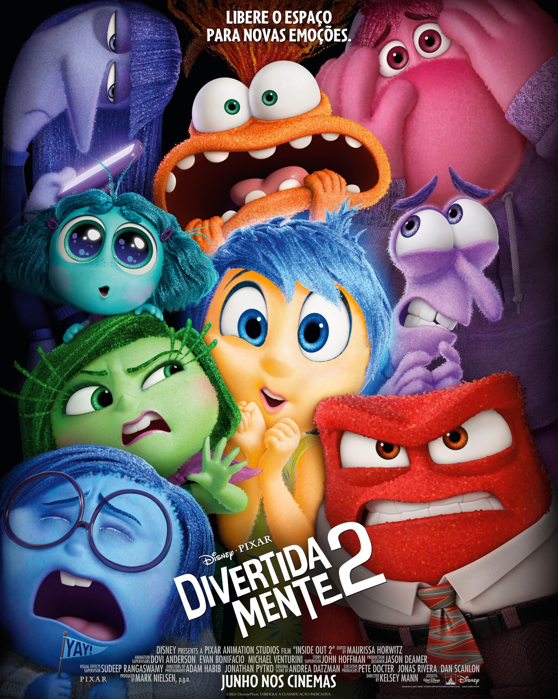
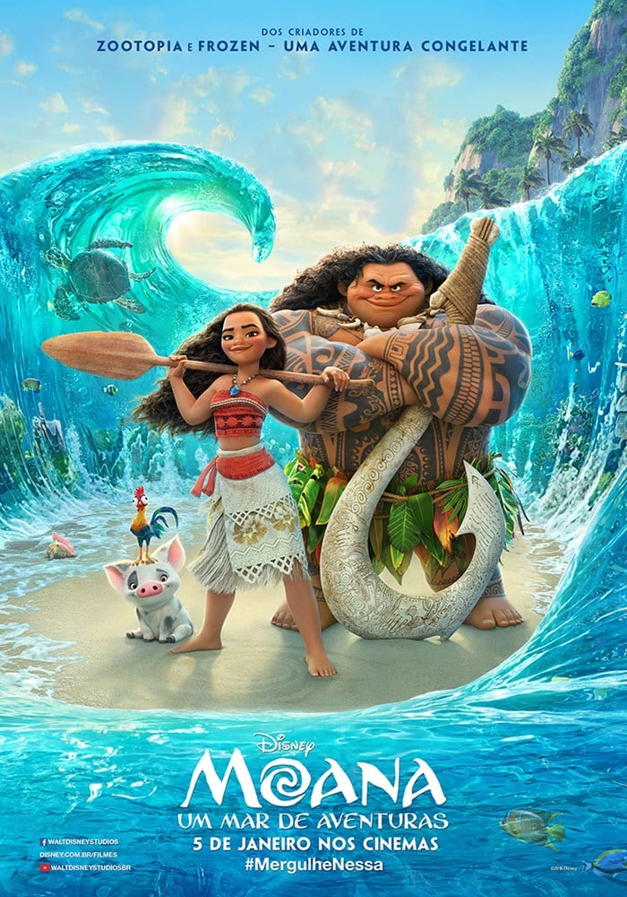

Aqui você encontra uma seleção dos melhores filmes de todos os tempos. Aproveite para conhecer e explorar os títulos que marcaram gerações, com suas histórias envolventes e atuações memoráveis.
| Filme | Imagem | Sinopse |
|---|---|---|
| Gente Grande2 | |
Em Gente Grande 2, Lenny (Adam Sandler), Kurt (Chris Rock), Eric (Kevin James), Marcus (David Spade) e Rob (Rob Schneider) se conhecem desde pequenos. Passados trinta anos, os cinco amigos se reencontram para curtir um fim de semana juntos com as respectivas famílias, mas o feriado de 4 de Julho em uma casa no lago promete muito mais diversão do que apenas lembranças dos bons momentos. Casados e com várias crianças, os homens de família terão de confrontar o fato de não serem mais tão jovens. |
| A Bela e a Fera | |
Em uma pequena aldeia da França vive Bella, uma jovem inteligente que é considerada estranha pelo moradores da localidade, e seu pai, Maurice, um inventor que é visto como um louco. Ela é cortejada por Gaston, que quer casar com ela. Mas apesar de todas as jovens do lugarejo o acharem um homem bonito, Bella não o suporta, pois vê nele uma pessoa primitiva e convencida. Quando o pai de Bella vai para uma feira demonstrar sua nova invenção, ele acaba se perdendo na floresta e é atacado por lobos. Desesperado, Maurice procura abrigo em um castelo, mas acaba se tornando prisioneiro da Fera, o senhor do castelo, que na verdade é um príncipe que foi amaldiçoado por uma feiticeira quando negou abrigo a ela. Quando Bella sente que algo aconteceu ao seu pai vai à sua procura. Ela chega ao castelo e lá faz um acordo com a Fera: se seu pai fosse libertado ela ficaria no castelo para sempre. A Fera concorda e todos os "moradores" do castelo, que lá vivem e também foram transformados em objetos falantes, sentem que esta pode ser a chance do feitiço ser quebrado. Mas isto só acontecerá se a Fera amar alguém e esta pessoa retribuir o seu amor, sendo que isto tem de ser rápido, pois quando a última pétala de uma rosa encantada cair o feitiço não poderá ser mais desfeito. |
| Abracadabra 2 | ||
| As Branquelas | |
Em As Branquelas, os irmãos Marcus (Marlon Wayans) e Kevin Copeland (Shawn Wayans) são detetives do FBI que estão com problemas no trabalho. A última investigação da dupla foi um grande fracasso e eles estão sob a ameaça de serem demitidos. Quando um plano para sequestrar as mimadas irmãs Brittany (Maitland Ward) e Tiffany Wilson (Anne Dudek) é descoberto, o caso é entregue aos principais rivais dos irmãos Copeland, os agentes Vincent Gomez (Eddie Velez) e Jack Harper (Lochlyn Munro). Para aumentar ainda mais a humilhação da dupla, eles são escalados para escoltar as jovens mimadas do aeroporto até o local de um evento pelo qual elas esperaram por meses. Porém no trajeto um acidente de carro provoca um verdadeiro desastre: enquanto uma das irmãs arranha o nariz, a outra corta o lábio. Desesperadas, elas se recusam a ir ao evento. É quando,para salvar o emprego, Marcus e Kevin decidem por assumir as identidades das irmãs. |
| Avatar | Jake Sully (Sam Worthington) ficou paraplégico após um combate na Terra. Ele é selecionado para participar do programa Avatar em substituição ao seu irmão gêmeo, falecido. Jake viaja a Pandora, uma lua extraterrestre, onde encontra diversas e estranhas formas de vida. O local é também o lar dos Na'Vi, seres humanóides que, apesar de primitivos, possuem maior capacidade física que os humanos. Os Na'Vi têm três metros de altura, pele azulada e vivem em paz com a natureza de Pandora. Os humanos desejam explorar a lua, de forma a encontrar metais valiosos, o que faz com que os Na'Vi aperfeiçoem suas habilidades guerreiras. Como são incapazes de respirar o ar de Pandora, os humanos criam seres híbridos chamados de Avatar. Eles são controlados por seres humanos, através de uma tecnologia que permite que seus pensamentos sejam aplicados no corpo do Avatar. Desta forma Jake pode novamente voltar à ativa, com seu Avatar percorrendo as florestas de Pandora e liderando soldados. Até conhecer Neytiri (Zoe Saldana), uma feroz Na'Vi que conhece acidentalmente e que serve de tutora para sua ambientação na civilização alienígena. | |
| Carros 2 | Após ganhar a Copa Pistão pela quarta vez, Relâmpago McQueen (Owen Wilson) e sua equipe retornam a Radiator Springs para descansar. Lá ele reencontra Mate (Larry the Cable Guy), seu maior amigo, que aguarda ansioso pelo retorno. Pouco após sua chegada Relâmpago toma conhecimento do Grand Prix Mundial, evento organizado pelo empresário Miles Eixodarroda (Eddie Izzard) onde todos os competidores usarão Alinol, um combustível alternativo. Após ser provocado em um programa de TV por Francesco Bernouilli (John Turturro), um adversário, Relâmpago resolve também competir. Ele decide levar Mate para acompanhá-lo nas corridas, mas logo ele é confundido com um espião americano. Desta forma Mate precisa lidar com Finn McMíssil (Michael Caine) e Holly Caixadibrita (Emily Mortimer), que tentam descobrir qual é o plano do professor Z (Thomas Kretschmann) e seu enigmático chefe para a competição. | |
| Desencantada | ||
| Detona Ralph | |
Detona Ralph acompanha o vilão de Conserta Félix Jr. de um popular jogo de fliperama chamado Ralph (John C. Reilly) que está completando 30 anos. Apesar de cumprir suas tarefas à perfeição, Ralph gostaria de receber uma atenção maior de Felix Jr. (Jack McBrayer) e os demais habitantes do jogo, que nunca o convidam para festas e nem mesmo o tratam bem. Para provar que merece tamanha atenção, ele promete que voltará ao jogo com uma medalha de herói no peito, no intuito de mostrar seu valor. É o início da peregrinação de Ralph por outros jogos, em busca de um meio de obter sua sonhada medalha. |
| Divertidamente 2 |  | Divertidamente 2 marca a sequência da famosa história de Riley (Kaitlyn Dias). Com um salto temporal, a garota agora se encontra mais velha, com 13 anos de idade, passando pela tão temida pré-adolescência. Junto com o amadurecimento, a sala de controle mental da jovem também está passando por uma demolição para dar lugar a algo totalmente inesperado: novas emoções. As já conhecidas, Alegria (Amy Poehler), Tristeza (Phyllis Smith), Raiva (Lewis Black), Medo (Tony Hale) e Nojinho (Liza Lapira), que desde quando Riley é bebê, eles predominam a central de controle da garota em uma operação bem-sucedida, tendo algumas falhas no percurso como foi apresentado no primeiro filme. As antigas emoções não têm certeza de como se sentir e com agir quando novos inquilinos chegam ao local, sendo um deles a tão temida Ansiedade (Maya Hawke). Inveja (Ayo Edebiri), Tédio (Adèle Exarchopoulos) e Vergonha (Paul Walter Hauser) integrarão juntos com a Ansiedade na mente de Riley, assim como a Nostalgia (June Squibb) que aparecerá também. |
| Enrolados | |
Flynn Ryder (Zachary Levi/Luciano Huck) é o bandido mais procurado e sedutor do reino. Um dia, em plena fuga, ele se esconde em uma torre. Lá conhece Rapunzel (Mandy Moore), uma jovem prestes a completar 18 anos que tem um enorme cabelo dourado, de 21 metros de comprimento. Rapunzel deseja deixar seu confinamento na torre para ver as luzes que sempre surgem no dia de seu aniversário. Para tanto, faz um acordo com Flynn. Ele a ajuda a fugir e ela lhe devolve a valiosa tiara que tinha roubado. Só que a mamãe Gothel (Donna Murphy), que manteve Rapunzel na torre durante toda a sua vida, não quer que ela deixe o local de jeito nenhum. |
| Moana |  | Moana Waialiki é uma corajosa jovem, filha única do chefe de uma tribo na Oceania, vinda de uma longa linhagem de navegadores. Quando os pescadores de sua ilha não conseguem pescar nenhum peixe e as colheitas falham, ela descobre que o semideus Maui causou a praga ao roubar o coração da deusa Te Fiti. Entusiasta das viagens marítimas, a jovem se vê querendo descobrir mais sobre seu passado e ajudar a comunidade, mesmo que a família queira proteger Moana a qualquer custo. Então, ela resolve partir em busca de seus ancestrais, habitantes de uma ilha mítica que ninguém sabe onde é. A única maneira de curar a ilha é persuadir Maui a devolver o coração de Te Fiti, então Moana parte em uma jornada épica pelo Pacífico. Moana começa sua jornada em mar aberto, onde enfrenta terríveis criaturas marinhas e descobre histórias do submundo. O filme é baseado em histórias da mitologia polinésia. |
| Raya e o Último Dragão | |
Em Raya e o Último Dragão, em uma região antiga e mágica, habitada por dragões mágicos que controlam o tempo e o redor, Raya é uma princesa de um país quebrado entre clãs. Porém, após uma terrível batalha entre dragões e o mal, os seres desapareceram, deixando a terra à mercê dos terríveis monstros que sugam qualquer vida e os transformam em pedra. Após uma reunião entre as tribos que acaba com seu clã sendo petrificado, Raya, agora uma exilada, sai em busca de um último dragão para que possa restabelecer a natureza do local. A princesa acaba encontrando Sisu, a última da espécie que decide ajudar Raya e deixar seus irmãos dragões orgulhosos. Mas à medida que eles vão encontrando pedaços de uma pedra que pode por o fim nos monstros de uma vez por todas, Raya e Sisu farão amizades e inimigos que vão mudar o curso de toda a história. |
| Red Crescer é uma Fera | Em Red: Crescer É uma Fera, quando uma adolescente fica muito nervosa, ela se transforma em um grande panda vermelho. O longa aborda dessa forma, a jornada de amadurecimento da personagem, suas inseguranças dessa fase onde, a personagem principal está dividida entre a filha que sempre foi e sua nova personalidade, intensificada por todos os sentimentos conflitantes que a adolescência provoca. Além do caos gerado por todas as mudanças em seus interesses, relacionamentos e corpo, sempre que a garota fica muito agitada ou estressada, ela vira um panda vermelho gigante, - o que com certeza, só gera mais problemas para a jovem - sendo uma metáfora para todas as vezes que, constrangidos pelos novos desafios que se apresentam em nossas vidas, as inseguranças só se agigantam. | |
| Rei Leão | |
Live action do clássico da Disney, em O Rei Leão, Simba (Donald Glover) é um jovem leão cujo destino é se tornar o rei da selva. Entretanto, uma armadilha elaborada por seu tio Scar (Chiwetel Ejiofor) faz com que Mufasa (James Earl Jones), o atual rei, morra ao tentar salvar o filhote. Consumido pela culpa, Simba deixa o reino rumo a um local distante, onde encontra amigos que o ensinam a mais uma vez ter prazer pela vida. |
| Rio 2 | Blu (Jesse Eisenberg) vive feliz no Rio de Janeiro ao lado da companheira Jade (Anne Hathaway) e seus três filhotes, Carla (Rachel Crow), Bia (Amandla Stenberg) e Tiago (Pierce Gagnon). Seus donos, Linda (Leslie Mann) e Túlio (Rodrigo Santoro), estão agora na floresta amazônica, fazendo novas pesquisas. Por acaso eles encontram a pena de uma ararinha azul, o que pode significar que Blu e sua família não sejam os últimos da espécie. Após vê-los em uma reportagem na TV, Jade insiste para que eles partam para a Amazônia. Blu inicialmente reluta, mas acaba aceitando a ideia. Assim, toda a família parte em uma viagem pelo interior do Brasil rumo à floresta amazônica sem imaginar que, logo ao chegar, encontrarão um velho inimigo: Nigel (Jemaine Clement). | |
| Viva a Vida é uma Festa | |
Em Viva - A Vida é uma Festa, Miguel é um menino de 12 anos que quer muito ser um músico famoso, mas ele precisa lidar com sua família que desaprova seu sonho. Determinado a virar o jogo, ele acaba desencadeando uma série de eventos ligados a um mistério de 100 anos. A aventura, com inspiração no feriado mexicano do Dia dos Mortos, acaba gerando uma extraordinária reunião familiar. |